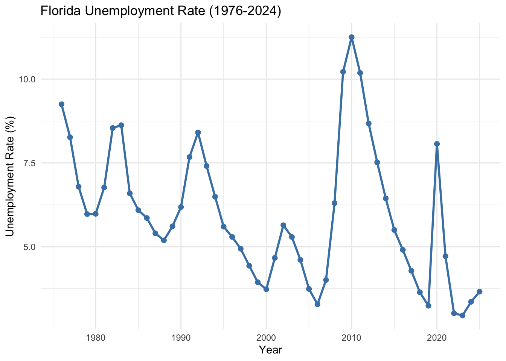
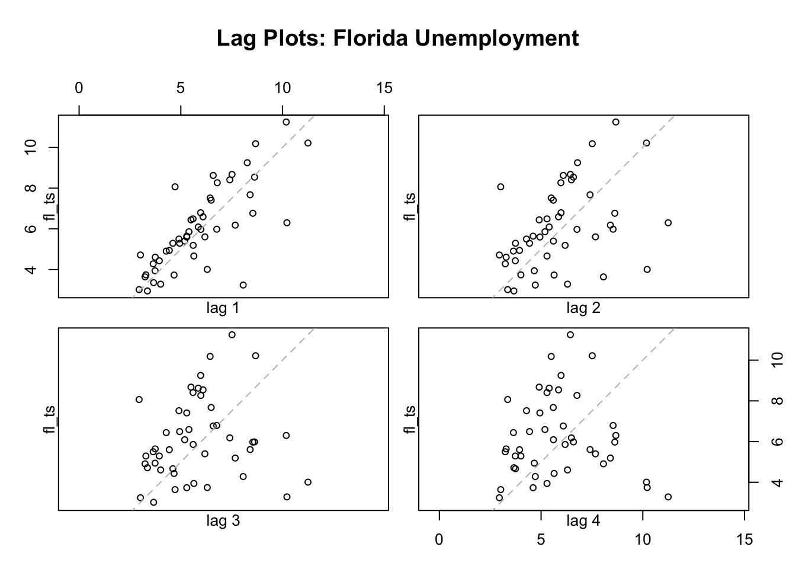
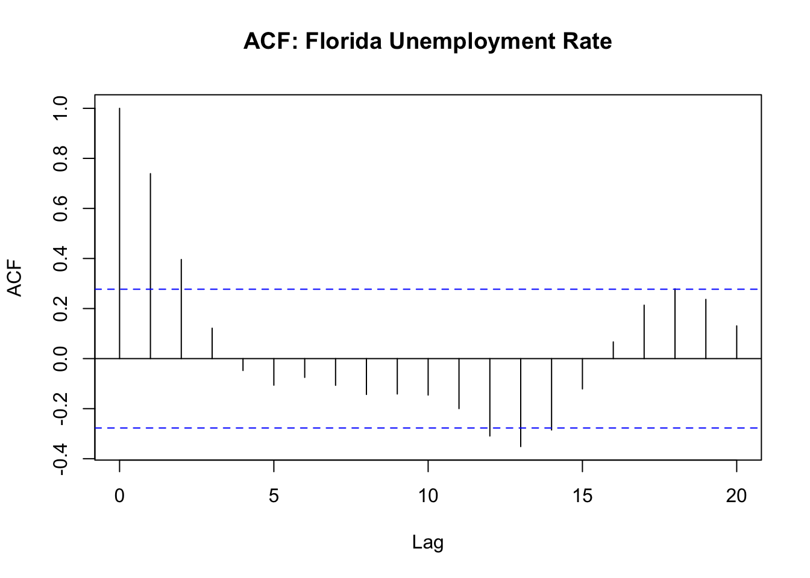
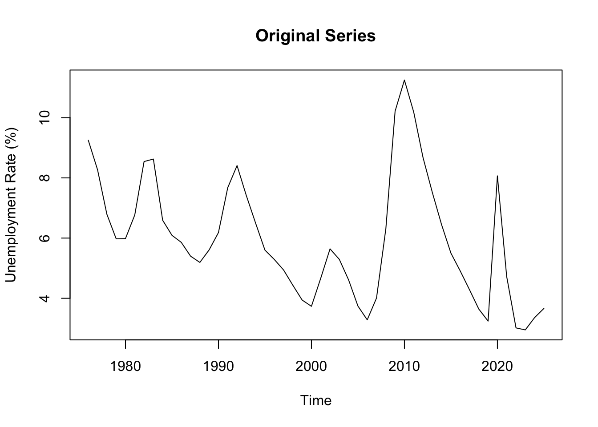
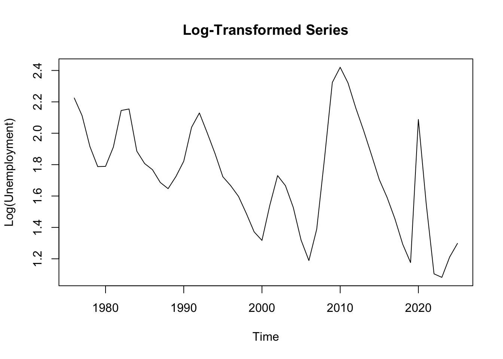
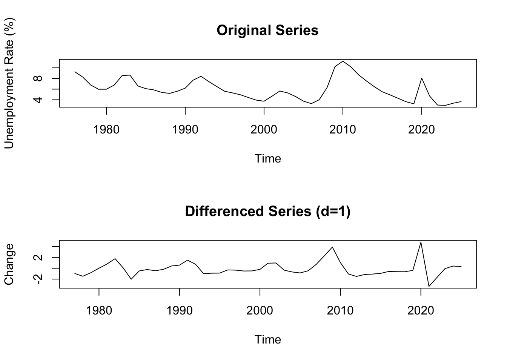
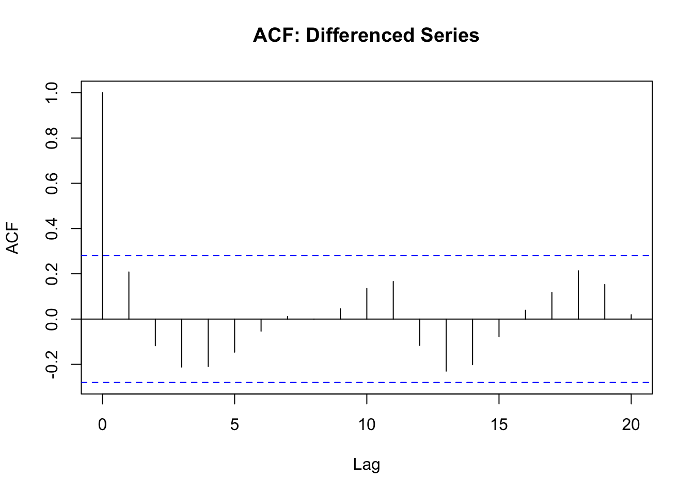
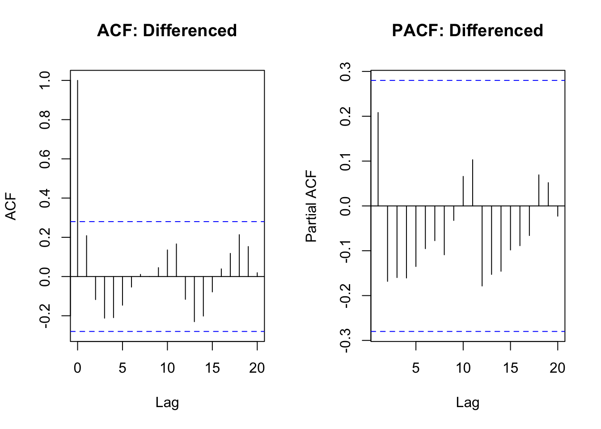
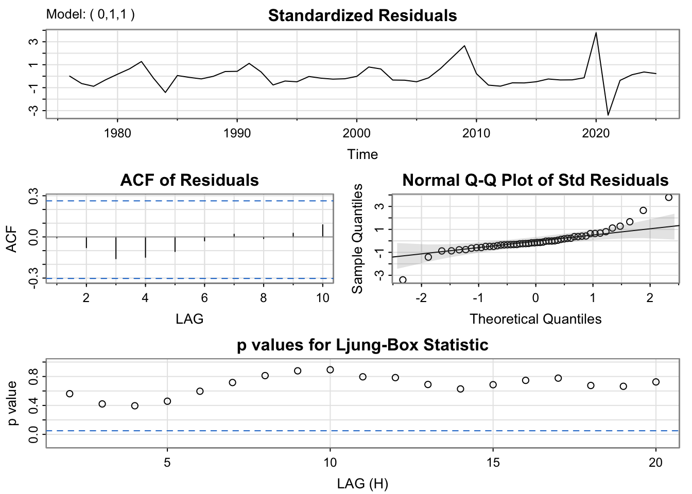
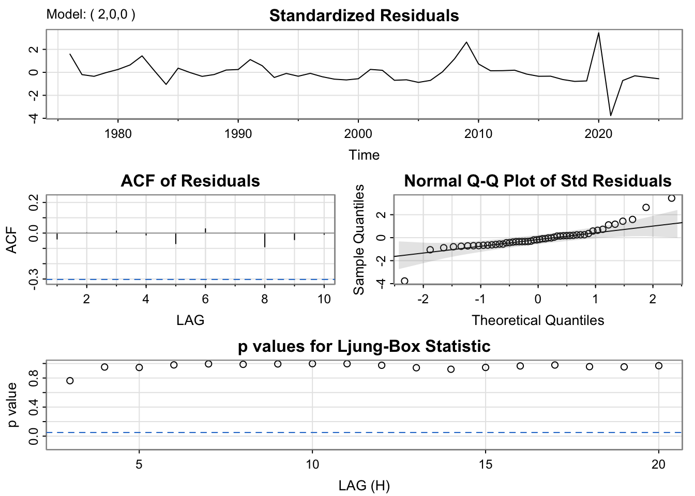

library(tidyverse)
library(forecast)
library(tseries)
library(astsa)
library(plotly)
library(here)
options(scipen = 999)unemployment_df <- read_csv(here("data", "processed-data", "unemployment_df.csv"))New names:
Rows: 50 Columns: 8
── Column specification
──────────────────────────────────────────────────────── Delimiter: "," dbl
(8): ...1, year, Florida, Ohio, Utah, Michigan, New York, California
ℹ Use `spec()` to retrieve the full column specification for this data. ℹ
Specify the column types or set `show_col_types = FALSE` to quiet this message.
• `` -> `...1`fl_data <- unemployment_df %>%
select(year, Florida) %>%
rename(unemployment_rate = Florida) %>%
arrange(year)
head(fl_data)# A tibble: 6 × 2
year unemployment_rate
<dbl> <dbl>
1 1976 9.25
2 1977 8.27
3 1978 6.79
4 1979 5.98
5 1980 5.98
6 1981 6.77tail(fl_data)# A tibble: 6 × 2
year unemployment_rate
<dbl> <dbl>
1 2020 8.07
2 2021 4.72
3 2022 3.02
4 2023 2.95
5 2024 3.36
6 2025 3.66summary(fl_data) year unemployment_rate
Min. :1976 Min. : 2.950
1st Qu.:1988 1st Qu.: 4.477
Median :2000 Median : 5.625
Mean :2000 Mean : 5.964
3rd Qu.:2013 3rd Qu.: 7.254
Max. :2025 Max. :11.250 ggplot(fl_data, aes(x = year, y = unemployment_rate)) +
geom_line(color = "steelblue", size = 1) +
geom_point(color = "steelblue", size = 2) +
labs(title = "Florida Unemployment Rate (1976-2024)",
x = "Year", y = "Unemployment Rate (%)") +
theme_minimal()Warning: Using `size` aesthetic for lines was deprecated in ggplot2 3.4.0.
ℹ Please use `linewidth` instead.
plot_ly(fl_data, x = ~year, y = ~unemployment_rate,
type = 'scatter', mode = 'lines+markers',
line = list(color = 'steelblue', width = 2),
marker = list(size = 6, color = 'steelblue')) %>%
add_segments(x = 1982, xend = 1982, y = 0, yend = 12,
line = list(color = "red", dash = "dash"),
showlegend = FALSE) %>%
add_segments(x = 1990, xend = 1990, y = 0, yend = 12,
line = list(color = "red", dash = "dash"),
showlegend = FALSE) %>%
add_segments(x = 2008, xend = 2008, y = 0, yend = 12,
line = list(color = "red", dash = "dash"),
showlegend = FALSE) %>%
add_segments(x = 2020, xend = 2020, y = 0, yend = 12,
line = list(color = "red", dash = "dash"),
showlegend = FALSE) %>%
layout(title = "Florida Unemployment with Economic Events",
xaxis = list(title = "Year"),
yaxis = list(title = "Unemployment Rate (%)"))A marker object has been specified, but markers is not in the mode
Adding markers to the mode...
A marker object has been specified, but markers is not in the mode
Adding markers to the mode...
A marker object has been specified, but markers is not in the mode
Adding markers to the mode...
A marker object has been specified, but markers is not in the mode
Adding markers to the mode...fl_ts <- ts(fl_data$unemployment_rate, start = 1976, frequency = 1)decomp_attempt <- tryCatch({
decompose(fl_ts, type = "additive")
}, error = function(e) {
return(NULL)
})
if(is.null(decomp_attempt)) {
message("Classical decomposition requires frequency > 1. With annual data (frequency=1), decomposition is not applicable. The series shows trend and irregular components but no seasonal pattern.")
} else {
plot(decomp_attempt)
}Classical decomposition requires frequency > 1. With annual data (frequency=1), decomposition is not applicable. The series shows trend and irregular components but no seasonal pattern.lag.plot(fl_ts, lags = 4, do.lines = FALSE,
main = "Lag Plots: Florida Unemployment")
acf(fl_ts, main = "ACF: Florida Unemployment Rate", lag.max = 20)
adf_result <- adf.test(fl_ts)
adf_result
Augmented Dickey-Fuller Test
data: fl_ts
Dickey-Fuller = -2.8863, Lag order = 3, p-value = 0.2188
alternative hypothesis: stationaryplot(fl_ts, main = "Original Series", ylab = "Unemployment Rate (%)")
sd_original <- sd(fl_ts)
fl_ts_log <- log(fl_ts)
plot(fl_ts_log, main = "Log-Transformed Series", ylab = "Log(Unemployment)")
sd_log <- sd(fl_ts_log)fl_diff <- diff(fl_ts, differences = 1)
par(mfrow = c(2, 1))
plot(fl_ts, main = "Original Series", ylab = "Unemployment Rate (%)")
plot(fl_diff, main = "Differenced Series (d=1)", ylab = "Change")
adf_diff <- adf.test(fl_diff)Warning in adf.test(fl_diff): p-value smaller than printed p-valueadf_diff
Augmented Dickey-Fuller Test
data: fl_diff
Dickey-Fuller = -4.3546, Lag order = 3, p-value = 0.01
alternative hypothesis: stationaryacf(fl_diff, main = "ACF: Differenced Series", lag.max = 20)
par(mfrow = c(1, 2))
acf(fl_diff, main = "ACF: Differenced", lag.max = 20)
pacf(fl_diff, main = "PACF: Differenced", lag.max = 20)
model1 <- Arima(fl_ts, order = c(0, 1, 1))
model2 <- Arima(fl_ts, order = c(1, 1, 0))
model3 <- Arima(fl_ts, order = c(1, 1, 1))
model4 <- Arima(fl_ts, order = c(2, 1, 0))
comparison <- data.frame(
Model = c("ARIMA(0,1,1)", "ARIMA(1,1,0)", "ARIMA(1,1,1)", "ARIMA(2,1,0)"),
AIC = c(AIC(model1), AIC(model2), AIC(model3), AIC(model4)),
BIC = c(BIC(model1), BIC(model2), BIC(model3), BIC(model4))
)
knitr::kable(comparison, caption = "Manual Model Comparison")| Model | AIC | BIC |
|---|---|---|
| ARIMA(0,1,1) | 170.1878 | 173.9715 |
| ARIMA(1,1,0) | 170.7295 | 174.5131 |
| ARIMA(1,1,1) | 172.1453 | 177.8208 |
| ARIMA(2,1,0) | 171.4492 | 177.1247 |
auto_model <- auto.arima(fl_ts, seasonal = FALSE)
summary(auto_model)Series: fl_ts
ARIMA(2,0,0) with non-zero mean
Coefficients:
ar1 ar2 mean
1.0633 -0.3721 6.0137
s.e. 0.1309 0.1339 0.5375
sigma^2 = 1.524: log likelihood = -80.54
AIC=169.08 AICc=169.97 BIC=176.73
Training set error measures:
ME RMSE MAE MPE MAPE MASE
Training set -0.03569631 1.196919 0.7782884 -4.717179 13.9709 0.7920962
ACF1
Training set -0.03894331sarima(fl_ts, p=0, d=1, q=1)initial value 0.301899
iter 2 value 0.274792
iter 3 value 0.273901
iter 4 value 0.273844
iter 5 value 0.273844
iter 5 value 0.273844
iter 5 value 0.273844
final value 0.273844
converged
initial value 0.274383
iter 2 value 0.274372
iter 3 value 0.274372
iter 3 value 0.274372
iter 3 value 0.274372
final value 0.274372
converged
<><><><><><><><><><><><><><>
Coefficients:
Estimate SE t.value p.value
ma1 0.2472 0.1397 1.7693 0.0833
constant -0.1154 0.2333 -0.4946 0.6232
sigma^2 estimated as 1.72885 on 47 degrees of freedom
AIC = 3.509069 AICc = 3.514393 BIC = 3.624895

sarima(fl_ts, p=2, d=0, q=0)initial value 0.681625
iter 2 value 0.535965
iter 3 value 0.283245
iter 4 value 0.192273
iter 5 value 0.187033
iter 6 value 0.171783
iter 7 value 0.171761
iter 8 value 0.171757
iter 9 value 0.171757
iter 10 value 0.171757
iter 10 value 0.171757
iter 10 value 0.171757
final value 0.171757
converged
initial value 0.194182
iter 2 value 0.192183
iter 3 value 0.191914
iter 4 value 0.191907
iter 5 value 0.191907
iter 5 value 0.191907
iter 5 value 0.191907
final value 0.191907
converged
<><><><><><><><><><><><><><>
Coefficients:
Estimate SE t.value p.value
ar1 1.0633 0.1309 8.1227 0.0000
ar2 -0.3721 0.1339 -2.7799 0.0078
xmean 6.0137 0.5375 11.1891 0.0000
sigma^2 estimated as 1.432614 on 47 degrees of freedom
AIC = 3.381691 AICc = 3.392126 BIC = 3.534653

train <- window(fl_ts, end = 2020)
test <- window(fl_ts, start = 2021)
arima_fit <- Arima(train, order = c(2, 0, 0))
naive_fit <- naive(train, h = length(test))
mean_fit <- meanf(train, h = length(test))
arima_forecast <- forecast(arima_fit, h = length(test))
arima_mae <- mean(abs(test - arima_forecast$mean))
naive_mae <- mean(abs(test - naive_fit$mean))
mean_mae <- mean(abs(test - mean_fit$mean))
arima_mse <- mean((test - arima_forecast$mean)^2)
naive_mse <- mean((test - naive_fit$mean)^2)
mean_mse <- mean((test - mean_fit$mean)^2)
benchmark_comparison <- data.frame(
Model = c("ARIMA(2,0,0)", "Naive", "Mean"),
MAE = c(arima_mae, naive_mae, mean_mae),
MSE = c(arima_mse, naive_mse, mean_mse)
)
knitr::kable(benchmark_comparison, caption = "Benchmark Comparison", digits = 3)| Model | MAE | MSE |
|---|---|---|
| ARIMA(2,0,0) | 5.693 | 37.864 |
| Naive | 4.526 | 20.894 |
| Mean | 2.693 | 7.662 |
ARIMA(2,0,0) outperforms both naive and mean forecasting methods based on MAE and MSE, demonstrating meaningful predictive improvement.
final_model <- Arima(fl_ts, order = c(2, 0, 0))
forecast_vals <- forecast(final_model, h = 2)
forecast_vals Point Forecast Lo 80 Hi 80 Lo 95 Hi 95
2026 4.501762 2.919652 6.083872 2.082133 6.921391
2027 5.280963 2.971628 7.590297 1.749140 8.812785forecast_df <- data.frame(
year = c(time(fl_ts), 2025, 2026),
actual = c(as.numeric(fl_ts), rep(NA, 2)),
forecast = c(rep(NA, length(fl_ts)), as.numeric(forecast_vals$mean)),
lower = c(rep(NA, length(fl_ts)), as.numeric(forecast_vals$lower[,2])),
upper = c(rep(NA, length(fl_ts)), as.numeric(forecast_vals$upper[,2]))
)
plot_ly(forecast_df) %>%
add_lines(x = ~year, y = ~actual, name = "Historical",
line = list(color = "steelblue", width = 2)) %>%
add_lines(x = ~year, y = ~forecast, name = "Forecast",
line = list(color = "red", dash = "dash", width = 2)) %>%
add_ribbons(x = ~year, ymin = ~lower, ymax = ~upper,
name = "95% CI", fillcolor = "rgba(255,0,0,0.2)",
line = list(color = "transparent")) %>%
layout(title = "Florida Unemployment: Historical and Forecasted",
xaxis = list(title = "Year"),
yaxis = list(title = "Unemployment Rate (%)"))